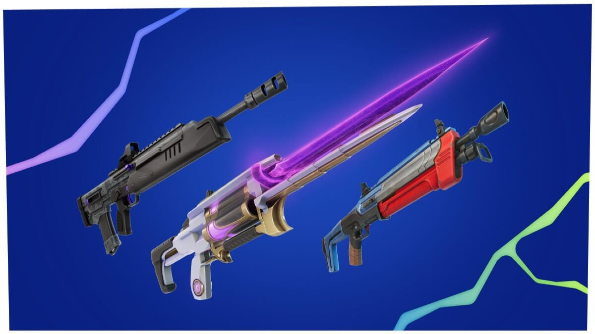
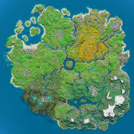
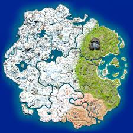
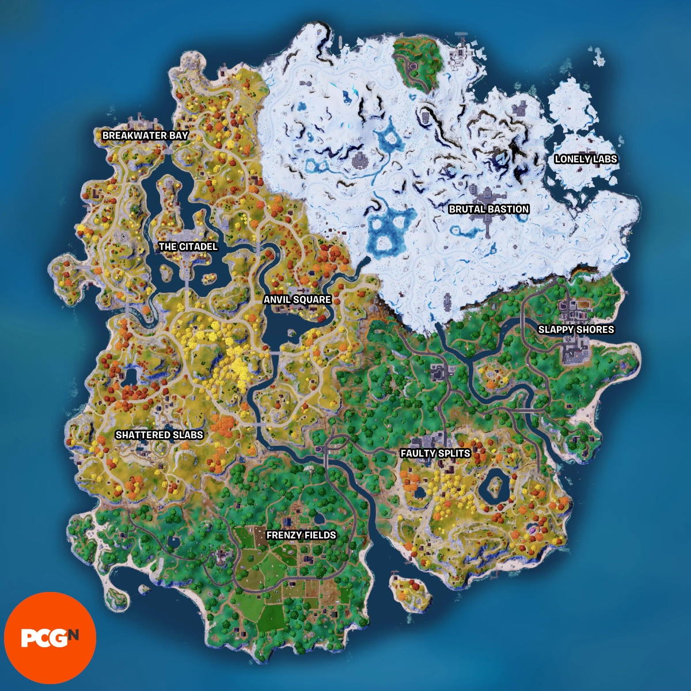
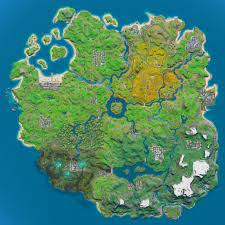
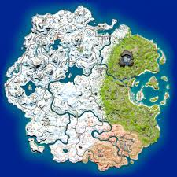
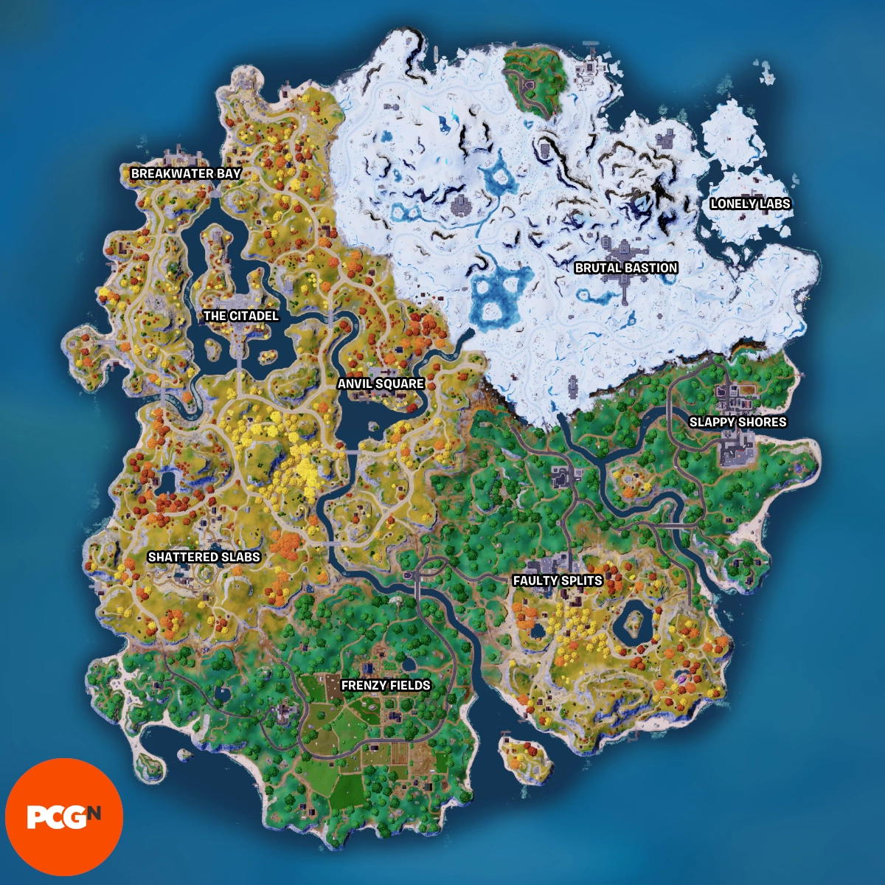

Az idő tájt amikor az Epic korai hozzáférésben megjelentette a Fortnite-ot a PlayerUnknown’s Battlegrounds világsiker lett, a 2017. márciusi megjelenése után három hónappal már 5 millió példányt adtak el belőle, felkeltve ezzel az érdeklődést a battle royale műfaj iránt. Az Epic ráeszmélt, hogy a Fortnite alapjátékhoz maguk is hozzá tudnának adni egy battle royale játékmódot, így gyors iramban, körülbelül két hónap alatt el is készültek ezzel. 2017 szeptemberében az Epic készen állt ahhoz, hogy ezt a játékmódot hozzáadja a Save the World fizetős korai hozzáférésű verziójához, azonban később úgy döntött, hogy inkább Fortnite Battle Royale címen különállóan, ingyenesen játszható, azonban mikrotranzakciókkal támogatott formában jelenteti meg azt. Ez a változat gyorsan hatalmas játékosbázist alakított ki; megjelenése utáni első két hétben több mint 10 millió felhasználói fiókot regisztráltak, aminek hatására az Epic különálló fejlesztőcsapatokat alakított ki a Fortnite Battle Royale és a Save the World fejlesztéséhez. Ennek hatására a Fortnite Battle Royale a Save the World által nem támogatott platformok, így az iOS, az Android és a Nintendo Switch felé terjeszkedhetett.
A Fortnitenak van egy elég bonyolult története is, ezt meg lehet ismerni a következő videóból:
A Chapter 4 nemrégen jelent meg, és látszólag újra felélesztette a játékot, miután az elmúlt seasonokban haldokolt. Új pálya, fegyverek, mechanikák és járművek!
A négy pálya: Athena, Apollo, Artemis, Asteria
 




